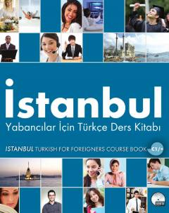

İYC1 darajasidagi chet elliklar uchun turk tili o'quv qo'llanmasi.
Ushbu kitob chet elliklar uchun turk tilini o'rgatishga mo'ljallangan keng qamrovli o'quv qo'llanmasidir. U Istanbul universiteti til markazining ko'p yillik tajribasi asosida tayyorlangan bo'lib, C1 darajasidagi o'quvchilar uchun grammatika, o'qish va yozish ko'nikmalarini rivojlantirishni maqsad qiladi.